十週、十三個教學小工具的案例分享
程式幾乎都是 AI 寫的；老師負責的是：要教什麼、學生卡在哪、什麼不能做。
老師先用 AI 把教材做出來：短片、3D 教具、課堂流程網頁
約 30 分鐘
學生動手用，也學會怎麼跟 AI 講話
約 35 分鐘・含現場體驗
收成績、同儕互評、把錯題交給 AI 分析
約 25 分鐘
五個做法，明天就能從第一步開始
約 15 分鐘＋提問
以前要找現成素材，現在可以照自己的課量身做。
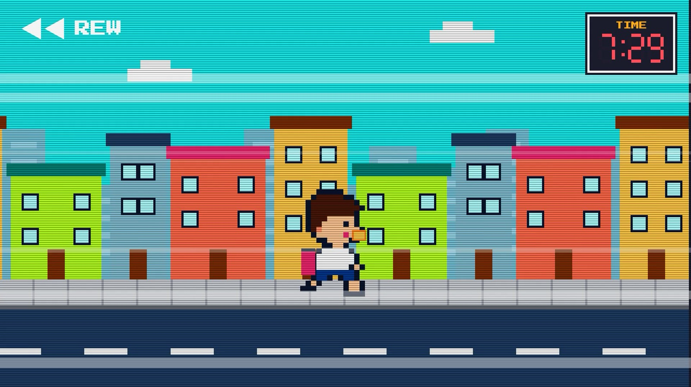
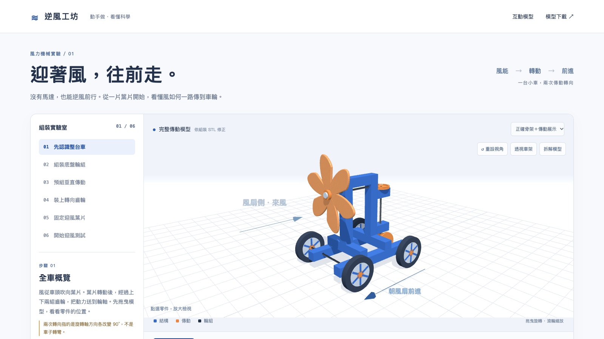
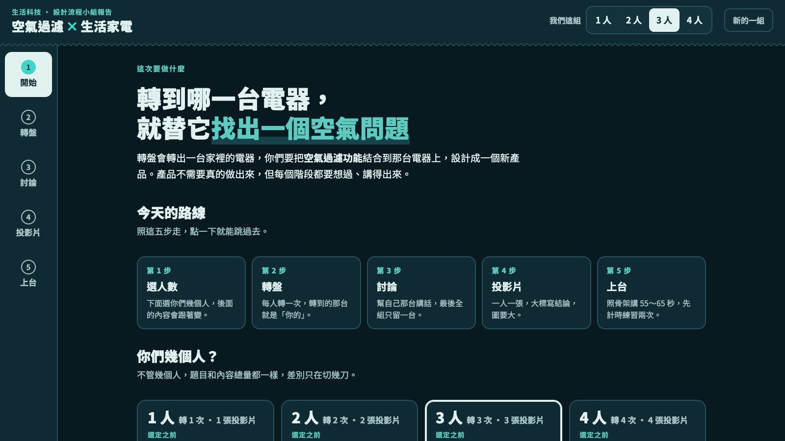
講不出名字的東西，
AI 只能用猜的。
滑鼠移到哪，就告訴你那塊叫什麼：中文、英文，還有一句可以直接貼給 AI 的說法。收錄 52 個。
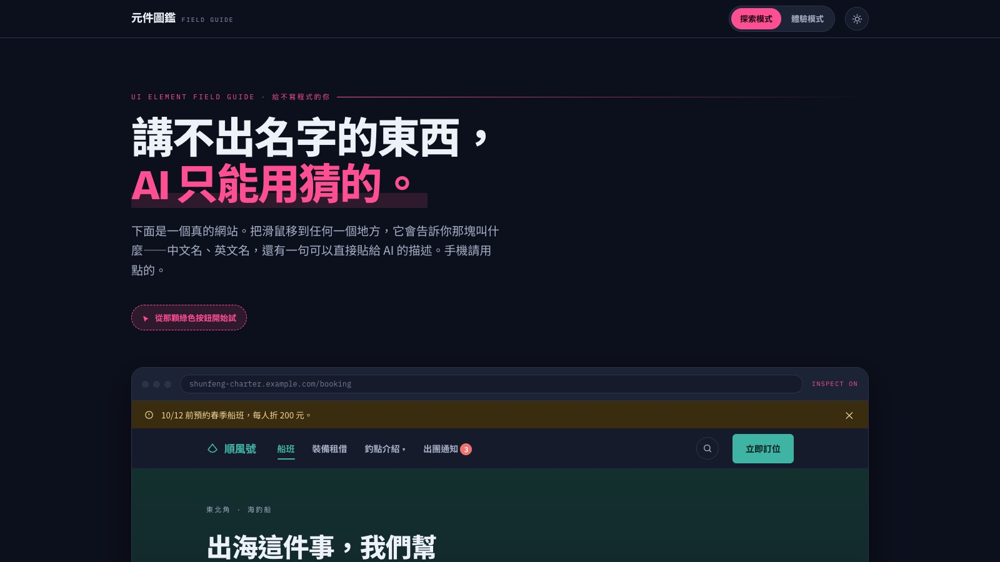
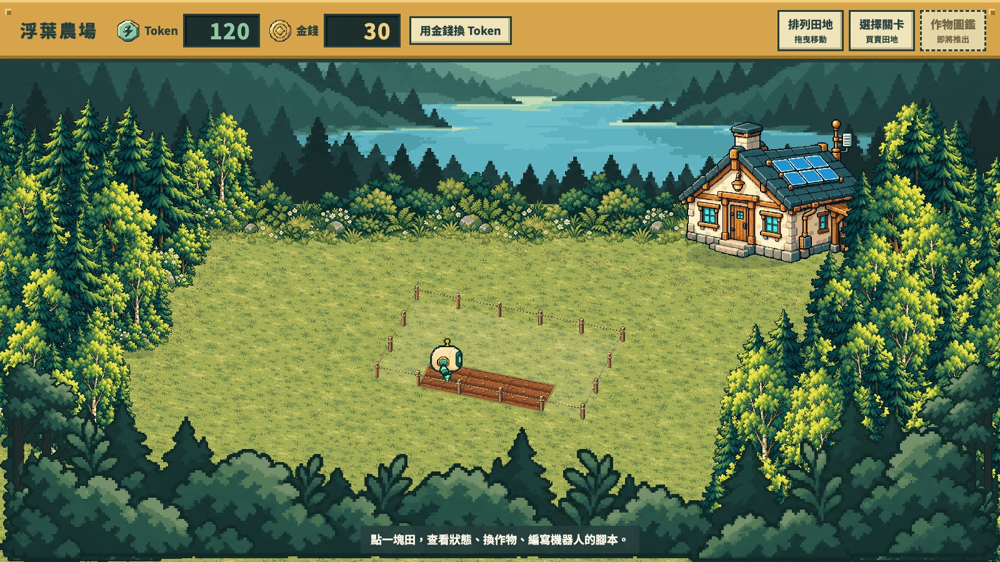
工具給學生用，同時教他們怎麼跟 AI 講話。
教的是句子的骨架，不是給學生一句咒語。
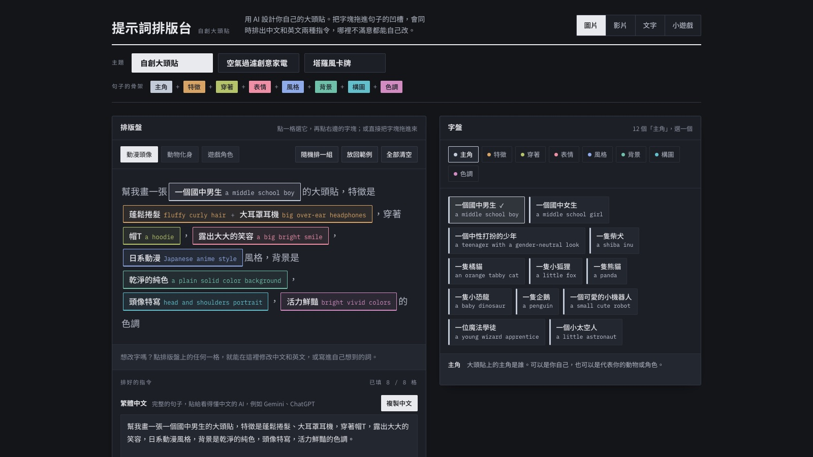
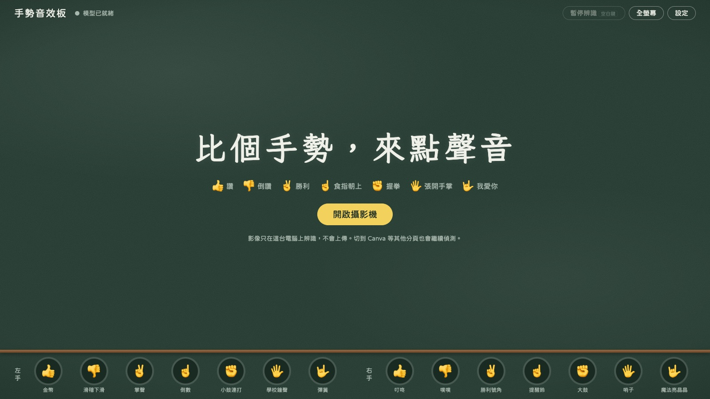
手勢音效板：比讚、勝利、握拳就播音效，切到 Canva 也繼續偵測。
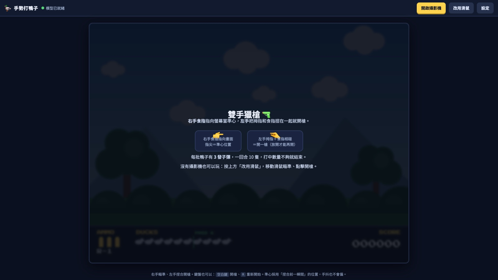
手勢打鴨子：右手食指瞄準，左手捏一下開槍。
影像只在這台電腦上辨識，不會上傳。這句話要先跟 AI 講清楚，它才會照這樣做。
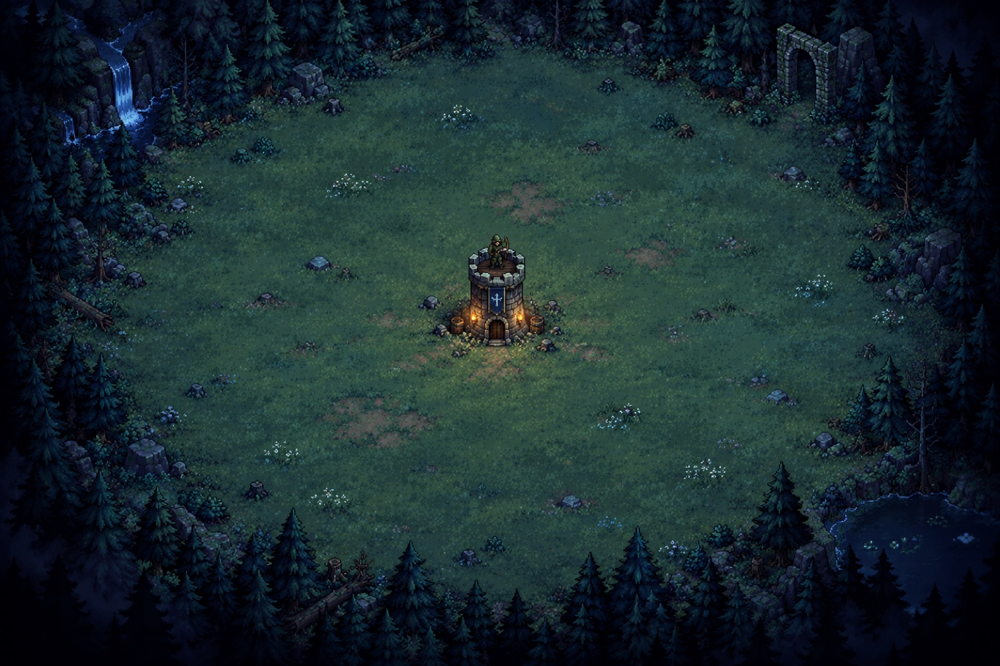
攻擊完全由積木決定，不能瞄準。打得贏，就代表程式寫得好。
重複 8 次:
旋轉 45 度
發射子彈
3 格 → 8 發
重複 8 次:
旋轉 45 度
重複 3 次:
發射子彈
旋轉 6 度
5 格 → 24 發
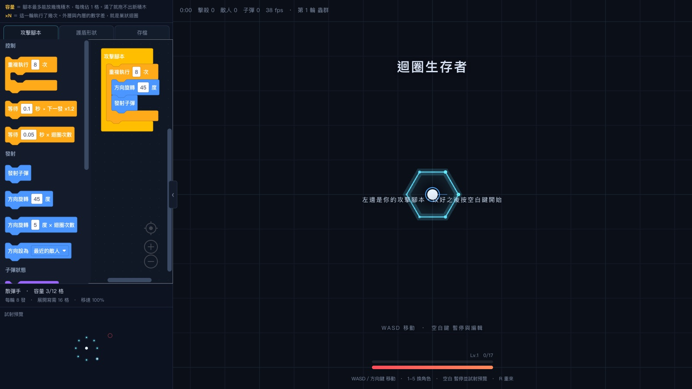
排一張自己的大頭貼提示詞，複製到你常用的 AI 試試看。
peicheng0413.github.io/prompt-blocks搜尋「跳出來的視窗」「灰色的字」，看它叫什麼。
peicheng0413.github.io/ui-element-explorerAI 做的工具，最後要能把學生的學習收回來。
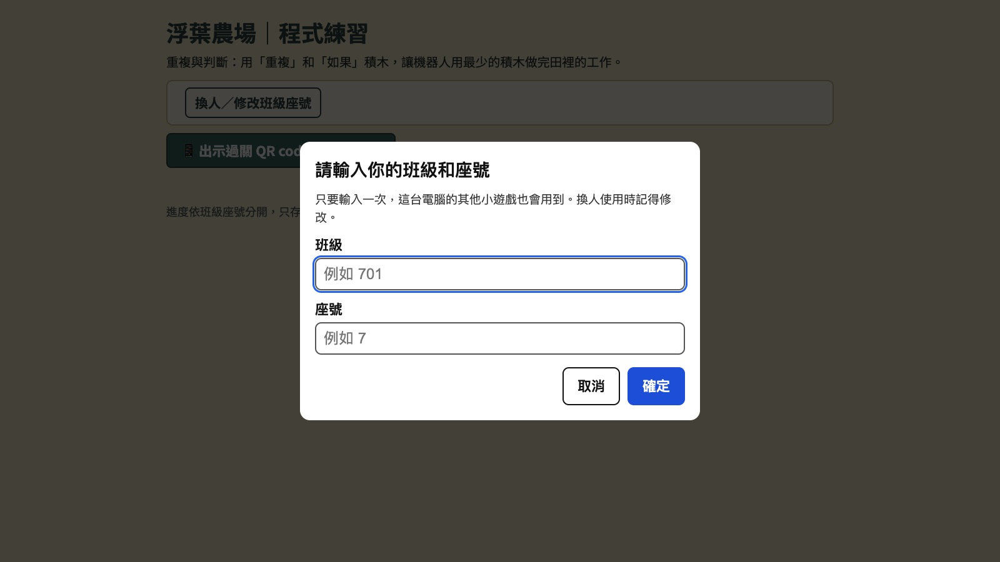
沒作答就是沒作答，補成 0 會把平均拉壞。
任何畫面都不回傳評分，互評才敢誠實。
資料用來做統計分析，觀察小組互動。
匯入當下就雜湊，後台、匯出都不出現。
刪除會連帶抹掉他所有的評分紀錄。
課前排座位，就等於分好組。
這個系統一共寫了 21 份決策紀錄，每一份都寫「為什麼不選另一條路」。AI 寫程式，但這些判斷它不會自己想到。
我做了一個教檢考古題刷題網站，錯題本有一顆按鈕：「下載給 AI 分析」。
學習單或線上測驗的結果，整理成一份文件交給 AI：
「這是某一班第二單元的錯題統計，請找出全班共同的迷思概念，並各給一題補救練習。」
記得先拿掉姓名、座號。
工具會過時，這五個做法不會。
挑一個你每學期都要重講的概念，請 AI 做一個「打開就能用」的單頁網頁示意。
用提示詞排版台的句子骨架，帶學生寫一次自己的提示詞。
把一次小考的錯題整理成表，去掉姓名，請 AI 找全班共同的錯誤。
peicheng0413.github.io/prompt-blockspeicheng0413.github.io/ui-element-explorerpeicheng0413.github.io/air-filter-wheelpeicheng0413.github.io/wind-car-workshoppeicheng0413.github.io/gesture-soundpeicheng0413.github.io/forest-watch-zhuyinpeicheng0413.github.io/loop-survivorspeicheng0413.github.io/robot-farm/practice.html過關 QR 掃描 app：github.com/PeiCheng0413/class-pass 謝謝大家，歡迎提問。